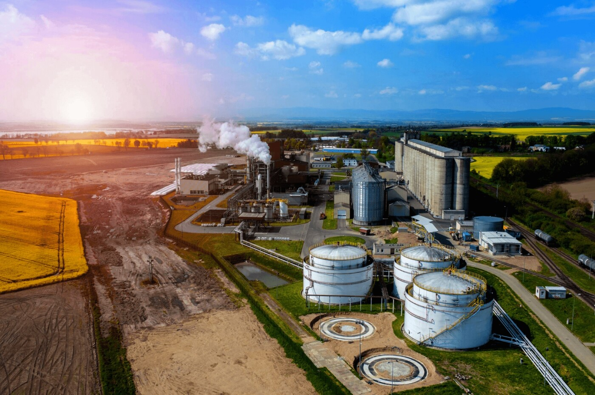

Contribuição da Cidade e do Campo

Historicamente a relação entre cidade e campo é vista por meio da divisão do trabalho em: intelectual e manual, de modo que na cidade é beneficiado o produto oriundo do campo. Como cidade no Brasil entendem-se os perímetros urbanos das sedes municipais, territórios e populações considerados urbanizados. A cidade é o centro da organização social e econômica, portanto, nela estão concentrados os principais serviços e produtos que são consumidos tanto pela população da própria cidade, quanto pela população do campo, a qual não consegue produzir tudo aquilo de que necessita.
Desta forma, A cidade pressupõe sedentarismo e uma hierarquia sócio-espacial. Conforme Paul Singer (1993), “a cidade é o modo de organização (sócio)espacial que permite à classe dominante maximizar a extração regular de um mais-produto do campo e transformá-lo em garantia alimentar para sua sustentação e de um exército que garanta a regularidade dessa dominação e extração” (MONTE-MÓR, 2006, p. 07). A cidade não apenas controla e comercializa a produção do campo, mas também passa a transformá-la e agregar valor à esta, expandindo sua esfera de dominação. O campo, que até então era praticamente autossuficiente, se vê dependente da cidade, em alguns casos, até para compra de produtos básicos de vida, como alimentos. Assim, tem-se a subordinação do campo em relação à cidade e assim vice-versa.
Exôdo Rural
Durante as décadas, a crescente industrialização, fez com que muitas pessoas deixassem o campo e migrassem para as cidades. Este fenômeno é conhecido como EXÔDO RURAL, e produz profundas consequências na organização urbana. No Brasil, este teve maior relevância entre os anos de 1960-1980, quando muitas pessoas deixaram o campo, deslocando-se para às cidades em busca de empregos nas fábricas. Com o avanço no meio técnico, a mão-de-obra no campo foi substituída pelos maquinários, expulsando as pessoas da terra, causando um inchaço urbano, em alguns casos, o aumento populacional excessivo causa o surgimento de favelas.
Impactos no Campo
Diminuição na mão de obra do campo.
- Criação de vazios demográficos (com pequenas cidades quase desaparecendo)
- Substituição de trabalhadores por máquinas
Agroindústria
Na cidade, o produto do campo é transformado nas fábricas e, posteriormente revendido aos consumidores. “A indústria impõe à cidade sua lógica centrada na produção e o espaço da cidade organizado como lócus privilegiado do excedente econômico, do poder político e da festa cultural, legitimado como obra e regido pelo valor de uso coletivo, passa a ser privatizado e subordinado ao valor de troca” (MONTE-MÓR, 2006, p. 09). Assim, os produtos deixam de possuir seu valor original, de uso, e passam a ser valorizados pelo custo de troca. Neste processo, o “homem do campo” se torna mais uma vez subordinado à fábrica, pois vê sua produção ser transformada e acrescida de valor, trazendo para o produtor um sentimento de ser similar ao de uma “traição” e injustiça.